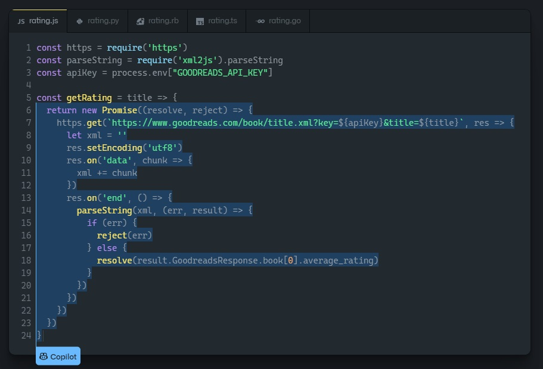
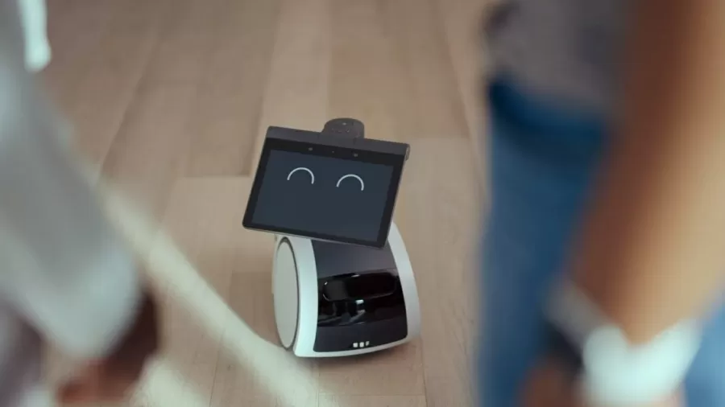

Inteligência Artificial
Copilot: GitHub e sua inteligência artifial.
A plataforma de códigos-fonte e arquivos para programadores GitHub lançou um novo assistente via Inteligência Artificial. A novidade pode ajudar tanto desenvolvedores em início de
carreira quanto veteranos que precisam economizar tempo.
O serviço é chamado de Copilot e atua em várias frentes, ajudando a realizar testes, encontrar bugs e até repetir códigos ao longo de um processo. Há até uma função de "autocompletar" que reconhece as possibilidades futuras e sugere alternativas
ou soluções de linhas inteiras de código ao usuário.
O Copilot funciona a partir do OpenAI Codex, que foi treinado usando códigos-fonte e linguagem natural de conversação entre humanos. Porém, como a própria empresa sugere, o assistente "não escreve códigos perfeitamente", e nem todas as sugestões são para melhor, especialmente nessas fases iniciais de implementação.
Disponibilidade
O Copilot, por enquanto, está em fase de "prévia técnica" e pode ser utilizado como uma extensão do Visual Studio Code. Você pode compreender melhor o seu funcionamento, inclusive com exemplos práticos, na página oficial do serviço.
Segundo o GitHub, o Copilot opera com várias linguagens diferentes, mas é especialmente treinado para lidar com Python, JavaScript, TypeScript, Ruby e Go.
Fontes
Amazon: Pequeno robô promete ser um 'Astro', será mesmo?
Já me desculpando pelo trocadilho a parte, o novo e simpático robô da gigante do comércio virtual. Desde seu anúnico o simpático robô da empresa trouxe diversas polêmicas à tona.
A Amazon lançou na terça-feira (28/09/2021), o robô para uso doméstico "Astro", que tem como função cuidar de pessoas idosas e monitorar o cotidiano doméstico. Segundo a fabricante seria "mais do que uma Alexa de rodas". O robôzinho, no entanto, não teve nem tempo de curtir os louros da divulgação e já está no centro de polêmicas. No evento de lançamento, a Amazon destacou que o robôzinho tem "sua própria personalidade, move-se com os clientes por suas casas durante chamadas de vídeo e muito mais". Mas profissionais que participaram do desenvolvimento do sistema fizeram diversas críticas, de acordo com reportagem da Vice, nos Estados Unidos. Entre elas, que o reconhecimento facial é "no mínimo instável", e que a promessa de servir de segurança é "risível".
"O Astro é terrível e quase certamente se jogará escada abaixo se tiver a oportunidade. A detecção de pessoas não é confiável, na melhor das hipóteses, tornando a proposta de segurança interna ridícula", afirmou uma das fontes.
Segundo o profissional, o aparelho é frágil para algo que tem um custo elevado — a partir de US$ 1.000 (cerca de R$ 5.410, em conversão direta) — e que, inclusive, o mastro quebrou em diversos equipamentos, o que, acontecendo na casa dos consumidores, tornaria complicado o retorno do produto para a Amazon.
Outra crítica dos desenvolvedores é em relação à proposta da empresa de divulgar que o robô pode ser um auxílio para pessoas com problemas de acessibilidade, principalmente diante da fragilidade dos mastros. "É, na melhor das hipóteses, um absurdo
completo e marketing e, na pior das hipóteses, potencialmente perigoso para qualquer um que realmente confie nele para fins de acessibilidade", disse a fonte.
Um outro colaborador afirmou à Vice que o Astro não "está pronto para ser lançado".
"O Astro passou por avaliações rigorosas de qualidade e segurança, incluindo dezenas de milhares de horas de testes com participantes do beta. Isso incluiu testes abrangentes no sistema avançado de segurança do Astro, que é projetado para evitar objetos, detectar escadas, e parar o dispositivo onde e quando necessário.".
Com tantas declarações e revelações negativas logo após o lançamento, o tom emotivo do vídeo preparado para anunciar o produto parece não ter sido o suficiente para impressionar os próprios participantes do projeto.